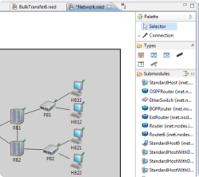
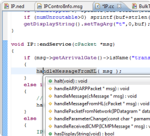
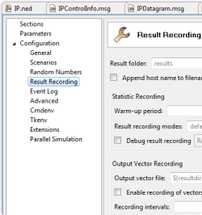
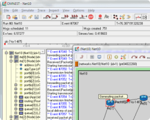
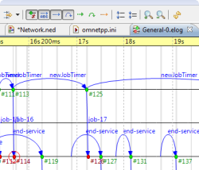
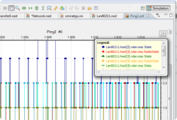
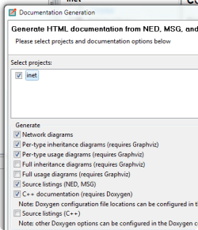
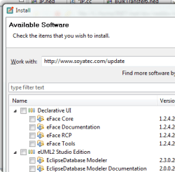

The OMNEST Simulation IDE supports all stages of a simulation project: developing, building, configuring and running simulation models, and analyzing results. It also supports visualizing simulation execution traces as sequence charts, and generating documentation. This page is intended to give you a brief overview of the Simulation IDE.

Components can be assembled to form compound modules and networks in the NED editor graphically or in source mode. Changes made in one representation are immediately reflected in the other. The source editor offers live error markers, intelligent Content Assist, Go To Declaration, Inheritance View, and other convenience features.

Simulation components are implemented in C++, using the OMNEST simulation library. OMNEST relies on Eclipse's C/C++ Development Tooling (CDT), one of the finest C++ IDEs in existence, for efficient editing. CDT offers content assist, navigation, code templates, refactoring, and many other features. Makefiles and the C++ build are managed automatically, but can be manually tweaked if necessary.

Simulation models and the simulation kernel can be configured and parameterized using configuration files. The configuration editor provides a form-based view of all configuration options, grouped by topics. The configuration can also be edited in source mode; changes made in one representation are immediately reflected in the other. The editor offers live error markers, content assist, informative tooltips, view of the parameterized module tree, and many other useful features.

Simulations can be run under several user interfaces, including a command-line interface for batch execution and a graphical interactive runtime environment. The graphical runtime allows the user to explore the simulation model and stop, resume, or single-step execution; animates packet transmissions and other events; displays log messages from model components; allows the user to peek into queues, buffers, state variables, and other objects; and provides other useful features.

One of the unique features of OMNEST is being able to record the simulation history and visualize it on an interactive sequence chart in the IDE. The sequence chart includes simulation events, messages sent between simulation components and C++ method calls across components. Sequence charts tool can be an invaluable help in tracking down protocol errors, in demonstrating the model, and also in documenting model operation (as the chart can be exported in various image formats, including SVG.) The tool offers a wide range of filtering and display options, and it remains useful for very large file sizes (beyond 4GB) as well.

The result analysis tool in the IDE allows you to process and plot simulation results in various ways. Simulation results (scalars, summary statistics, histograms, time series, etc.) are written into result files during execution; these files also record various details about the simulation run, such as the time of execution, and the name of the network and its parameterization. The result analysis tool allows you to select a subset of all result files to work with and displays their contents organized in various ways. You can filter the result items you are interested in and plot them. Processing steps such as averaging or smoothing vector data can also be applied before plotting. Data and graphics can be exported in various formats, and the way the plots have been produced (data filter, processing operations, chart type, chart attributes, etc.) can be saved as recipes, which makes it easy to reproduce the same plots after re-running the simulation.

The IDE allows you to generate hyperlinked HTML documentation from simulation models and model frameworks. The documentation is generated from the network description (NED) files and their comments much the same way as Javadoc for Java or Doxygen for C++. The documentation will contain network diagrams, inheritance and usage diagrams, and other useful diagrams as well, and includes references to Doxygen-generated C++ documentation of the underlying C++ model code.

Since the OMNEST Simulation IDE is a customized Eclipse instance, you can install 3rd-party software into it from the Eclipse Marketplace and other Eclipse plug-in sites with just a few clicks.